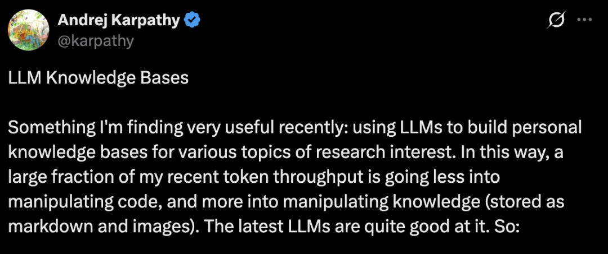

Andrej Karpathy 刚刚分享了他正在用 LLM 构建个人知识库，有很多值得借鉴的地方。

以下是他分享的具体工作流：
数据录入与整合
前端可视化界面
Karpathy将Obsidian作为集成开发环境的前端，用来查看原始数据、编译好的Wiki以及生成的图表可视化内容。
这里最核心的一点是，Wiki系统里的所有数据均由大模型负责编写和维护，他本人极少手动干预。他还尝试了一些Obsidian插件，例如用Marp插件将数据渲染成幻灯片格式进行查看。
大模型问答环节
当Wiki积累到一定规模时，事情变得非常有趣。以他最近的一项研究为例，库里已经包含约100篇文章和40万个单词。此时，他可以向大模型智能体提出各种针对该Wiki的复杂问题，大模型会自动去检索、研究并给出答案。
他原本以为这需要用到复杂的RAG技术，但实际测试发现，在目前这种相对中等的数据规模下，大模型非常擅长自动维护索引文件和所有文档的简短摘要，并且能够轻松读取所有重要的关联数据。
多样化的结果输出
在获取答案时，他并不满足于终端里的纯文本回复。他会让大模型生成Markdown文件、Marp格式的幻灯片或者matplotlib图像，然后再次放入Obsidian中查看。系统可以根据不同的查询需求生成许多其他形式的视觉输出。
很多时候，他会把这些输出结果重新归档到Wiki中，从而为后续的查询提供更丰富的背景信息。通过这种方式，他个人的探索和提问过程也在不断丰富着整个知识库。
自动化数据清理
他还利用大模型对Wiki进行健康检查。例如找出不一致的数据，通过网络搜索补全缺失的信息，寻找有趣的关联点来生成新文章的候选选题等，以此来逐步清理Wiki并提升整体数据的完整性。大模型也非常擅长提出进一步探索的问题建议。
开发额外辅助工具
在处理数据时，他开发了一些额外的辅助工具。比如他通过vibe coding为Wiki写了一个简单初级的搜索引擎。他不仅会通过网页交互界面直接使用这个引擎，更常见的是将其作为命令行工具提供给大模型，让大模型借此来处理更大规模的查询任务。
对未来的进一步探索
随着知识库体量不断增大，他自然而然地考虑到了合成数据生成和微调技术。他希望通过这些技术让大模型将数据直接内化到神经网络权重中，而不仅仅是停留在上下文窗口里。
总结与终极构想
整个流程可以概括为：收集多个信息源的原始数据，由大模型编译成Markdown格式的Wiki，接着大模型通过调用各种命令行工具进行问答和Wiki的增量优化，最后所有内容都在Obsidian中呈现。人类几乎不需要手动编写或编辑Wiki，这完全是大模型的工作领域。Karpathy认为，这个基于脚本的组合完全有潜力进化成一款令人惊叹的全新产品。
顺着这个思路推演，未来当我们向一个前沿级别的大模型提出问题时，它可能会唤醒一个大模型团队来将整个过程自动化：迭代构建出一个完整的临时Wiki，清理数据，循环几次后，最终直接输出一份完整的报告。这已经远远超出了简单的代码解码范畴。
--end--
最后记得⭐️我，每天都在更新：如果觉得文章还不错的话可以点赞转发推荐评论
/...@作者：你说的完全正确（YAR师）